Som du kan se, arbejder jeg videre på den samme undervisnings webside. Det betyder, at hvis du vil have alle menupunkterne med på de nye sider, så skal du kopiere koden imellem header-tags'ene til alle sider.
Indtil videre har vi lavet CSS-kode, som rammer alle tags af en bestemt type - fx alle h1-tags.
Hvis man ønsker, at en CSS styling skal slå igennem på et eller flere elementer, men ikke på alle elementer af samme type, kan man anvende CSS klasser.
Du skal selv navngive din CSS-klasse i dit stylesheet. Sørg for at bruge et navn, som giver god mening, så du nemt kan se - både i din HTML-fil og din CSS-fil - hvad denne klasse gør.
<h1 class="red">Overskrift</h1>
For at give dette HTML-element en klasse bruges koden: class="red". Du skal så tilsvarende lave din styling på .red i dit stylesheet.
I CSS skrives klassen med et punktum først, og derudover defineres den på samme måde, som en almindelig CSS-selector:
- .red
- {
- color: red;
- }
Klassen "red" kan genbruges på alle de elementer, hvor du gerne vil have den CSS-kode til at slå igennem. Så du kan også lave en <p class="red">, og så vil al tekst i den paragraph være rød.
Hvis du har kigget koden igennem på denne side, vil du se, at jeg har brugt en klasse, der hedder "code". Den bruger jeg til at fjerne punkttegn og indrykke kode, når jeg skriver kodeeksempler. Det gør jeg med følgende kode i min CSS:
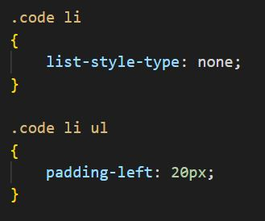I eksemplet ovenfor har jeg sat klassen "code" på mit ul-tag. Herefter bruger jeg reglen om descendants, så jeg fortæller, at på alle li-tags, der ligger under min klasse "code", skal der ikke vises et punkttegn (list-style-type: none;). Herudover fortæller jeg, at på alle ul-tags, der ligger under et li-tag under min klasse "code", skal der være en padding til venstre på 20px (padding-left: 20px;).
Prøv at kigge på min HTML-kode på denne side (der, hvor jeg har brugt klassen "code") og se, om du kan gennemskue, hvad jeg mener, når jeg skriver .code li og .code li ul. Hvis det ikke umiddelbart giver mening, så spørg mig, når jeg kommer forbi dig på et tidspunkt.
Prøv at sætte koden på billedet (eller i HTML-kodekommentarerne) ovenfor ind i dit stylesheet til denne side. Så skulle kode-eksemplerne gerne ende med at se ud, som det billede, du kan se i browseren nedenfor:
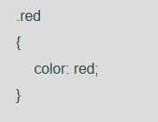Pseudoklasser
Pseudoklasser er CSS-klasser eller CSS-selectors, der kan befinde sig i forskellige stadier. Et eksempel på dette er links. Dem kan vi støde ind i i tre forskellige stadier: normal, hover og visited. Det normale stadie er, når vi ikke har klikket på linket endnu eller holde musen henover, så er linket bare et helt almindeligt link og bliver stylet med vores almindelige a-selector (se billedet i browseren nedenfor).
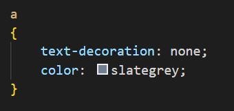Et af de andre stadier, vores link kan være i, er når vi holder musen henover det. Så er linket i det stadie, som hedder hover. Det stadie kan vi style på ved at bruge pseudoklassen hover. Alle pseudoklasser angives med et kolon først :hover. Så vi kan style på a:hover.
Du skal nu herinde sætte teksten til at ændre farve på links, når du holder musen henover. Det gør du ved at skrive følgende kode (se billedet i browseren):
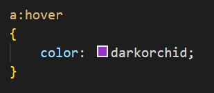Her kommer et eksempel på et link, hvor du kan teste, om det virker, når du holder musen henover: testlink.
Det tredje stadie, som vores link kan være i, er visited. Dette stadie slår igennem, når vi har klikket på et link, så man kan se, hvilke links man har klikket på. Vi styler på vores besøgte links ved at bruge pseudoklassen visited og skrive a:visited i vores CSS-kode:
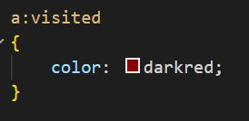Skriv denne kode ind i dit stylesheet til denne side. Din a:visited kode skal stå over din a:hover kode, for ellers virker a:hover ikke, når du har klikket på et link (fordi CSS'en også læser sin kode kronologisk, så hvis a:hover står først, så vil den først sætte hover-farven og a:visited står til sidst, så vil den til sidst sætte a:visited-farven og det vil så være den, du ser).
Hvis du klikkede på testlinket et par afsnit højere oppe, skulle det nu gerne have skiftet farve til en mørkerød, men hvis du holder musen henover, så skifter den stadig til den anden lilla farve.
Hover bruges næsten altid til at fortælle brugeren, at "her er der noget, du kan klikke på". I forbindelse med a-tags bruges ofte et skift af skriftfarve. På billeder gør man ofte billedet en smule gennemsigtigt for at give en hover-effekt. Ved menupunkter (på horisontale menuer) kan man også bruge en baggrundsfarve.
Hover på billeder
Man kan angive gennemsigtighed på et element ved at bruge attributten "opacity". En opacity på 1 angiver at elementet slet ikke er gennemsigtigt. En opacity på 0 angiver at elementet er helt gennemsigtigt. Husk, at kommatal i CSS skal skrives med punktum i stedet for komma - fx 0.8.
For at sætte en opacity på billeder, som er links, når man hover over dem, skal man ramme alle img-tags som ligger inden i a-tags - og man skal ramme dem i det stadie, hvor man hover over dem.
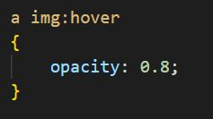Hvis du kun skriver koden på img:hover, så vil den ramme alle dine billeder - også dem, der ikke er links. Så derfor skal du sørge for at have a-tagget med også, så du er sikker på, at effekten kun slår igennem på billeder, som er links.
Hover på menupunkter
På denne side har jeg en menulinje, som er 50px høj og har farven tomato. Jeg har samtidigt en linjehøjde, som er 50px høj for at få min tekst til at stå midt i menulinjen.
(Hvis du har fulgt opgaverne her på undervisningssiden, så har du på et tidspunkt lavet alle billeder på siden 300px brede. Dette vil give lidt problemer for dig, når du skal se nogle af de næste billeder i browseren, så hvis du gerne vil kunne se de næste billeder i fuld bredde, skal du gå ind i stylesheetet til denne side og tilføje klassen .fullwidth - i klassen skriver du, at bredden skal være 100% (width: 100%;) og så vil alle de billeder, som skal vises i fuld bredde, blive ramt af den klasse. Jeg bruger den også på de efterfølgende sider til billeder, der er meget brede.)
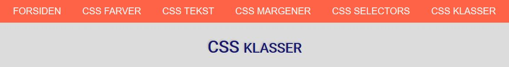En af de måder, man kan angive en hover-effekt er ved at ændre baggrundsfarven bag linket, så man tydeligt kan se, at man holder musen henover.
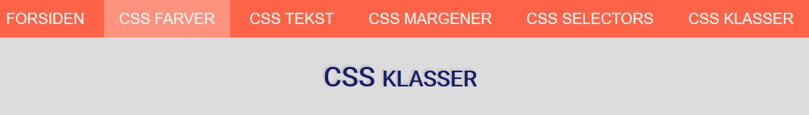Hvis jeg blot skriver header a:hover (eller nav a:hover) og sætter en baggrundsfarve på det (det kan fx være background-color: rgba(255, 255, 255, 0.3);), så vil i se, at baggrundsfarven kun lægger sig lige rundt om teksten:
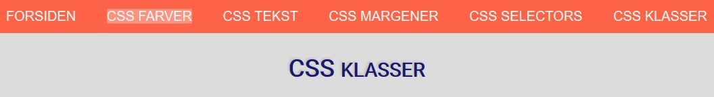For at få mit menupunkt til at fylde hele højden ud i min menulinje (det overliggende element), skal jeg sætte mine links til at blive vist som inline-block:
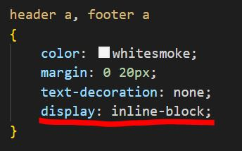Dette gør, at min baggrundsfarve nu fylder ud i hele højden:
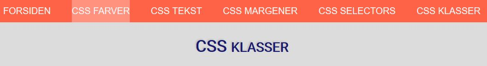Baggrundsfarven står stadig lidt tæt op ad mit menupunkt på højre og venstre side. Dette kan jeg ændre ved at lave min margin i koden om til padding i stedet for (med padding giver jeg luft omkring elementet men på indersiden af elementet, så i dette tilfælde vil det gøre mit a-element større til højre og venstre side):
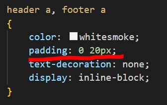Hvis du sammenligner de to kodeblokke, kan du se, at jeg i linje 4 har ændret margin til padding. Så i stedet for at sætte luft udenom mit element, laver jeg nu luft inden i mit element i stedet for, og det gør, at baggrundsfarven nu viser, at elementet er blevet bredere i begge sider: